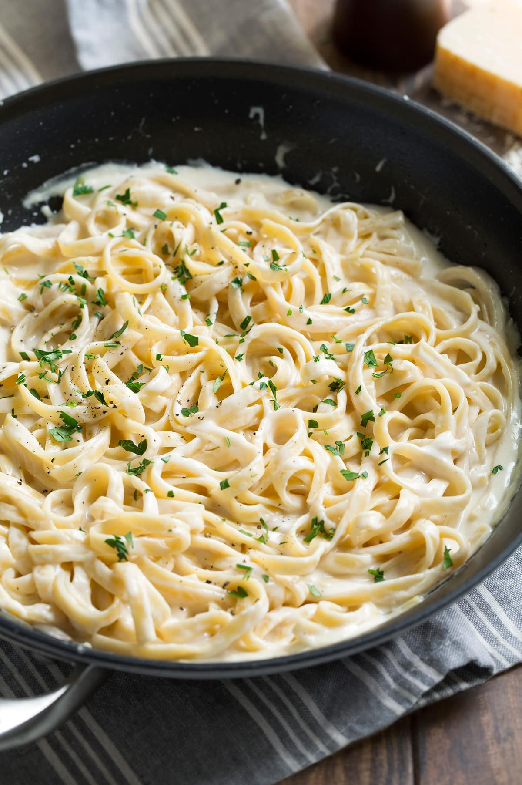

Alfredo Pasta Sauce

Basic pasta sauce, good for pretty much any pasta and quick and easy to make.
Ingredients
- Butter
- White wine
- Garlic
- Salt and Pepper
- Some water taken from the boiling pasta pot
Steps
- Dice the garlic and put the butter in a pan. Put the garlic in with the butter when the butter is foamy.
- Let the garlic cook until fragrant and hot.
- Add a splash of wine to the pan to deglaze it and immediately add the pasta to the pan. Add some water and stir well, so the pasta is covered.
- Season and serve.